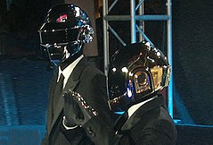
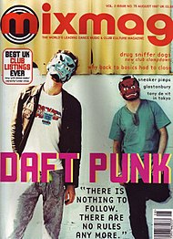
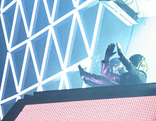
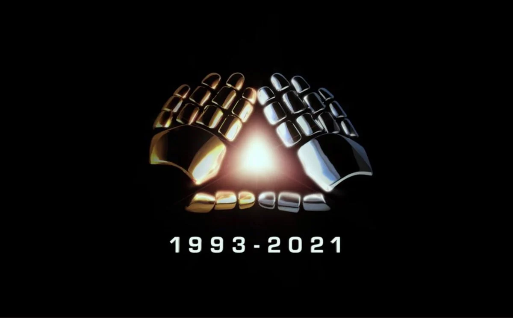

Daft Punk – francuski duet muzyki elektronicznej powstały w 1993 roku w Paryżu, tworzyli go Guy-Manuel de Homem-Christo i Thomas Bangalter. Zaliczani często do najbardziej nowatorskich artystów w historii muzyki tanecznej popularność zdobyli w późnych latach 1990. jako część ich rodzimej fali french house’u. W dalszych latach osiągali kolejne sukcesy nagrywając albumy łączące muzykę house z elementami funku, techno, disco, indie rocka oraz popu. Eksperymentowali m.in. z automatami perkusyjnymi, syntezatorami i modyfikatorami dźwięku. Od 1999 przybrali wizerunek robotów z kaskami by także chronić tożsamość.
Duet odpowiedzialny za jedne z najbardziej popularnych utworów tanecznych przez ponad 20 lat wpływał na kształt muzyki elektronicznej, electro i house’u. Oprócz czterech albumów studyjnych był autorem np. też ścieżki dźwiękowej do filmu Tron: Dziedzictwo (2010) składającej się z ponad 30 utworów. Nominowani m.in. 12-krotnie do nagrody Grammy zdobyli sześć statuetek, rzadkie osiągnięcie dla muzyków spoza Ameryki w tym francuskich. Otrzymali cztery nagrody z czterech nominacji za album Random Access Memories (2013) i pochodząca z niego piosenkę „Get Lucky”; sam album zdobył jeszcze piątą Grammy. Rolling Stone umieścił Daft Punk na 12 miejscu swojej listy dwudziestu najwspanialszych duetów wszech czasów.
Większosć z nas dobrze zna największe hity zespołu. Poznajmy jednak jak to się wszystko zaczęło.
Historia
1987–1992: Początki
Thomas Bangalter i Guy-Manuel de Homem-Christo poznali się w 1987, uczęszczając do tej samej szkoły Lycée Carnot w Paryżu. Wraz z Laurentem Brancowitzem utworzyli indie-rockowy zespół Darlin’ w 1992. Jeden z krytyków muzycznych brytyjskiego czasopisma Melody Maker określił pierwsze dokonania tego zespołu jako „banda stukniętych gnojków” (ang. a bunch of daft punk). Po rozwiązaniu zespołu Brancowitz wstąpił do Phoenix, a dwaj pozostali członkowie założyli Daft Punk, którego nazwa zainspirowana była wcześniejszymi słowami krytyki.
1993–1999: Homework
W 1993 roku Daft Punk wysłali swoje demo do szkockiej wytwórni Soma Quality Recordings, która następnie w 1994 wydała pierwszy
singel duetu, zatytułowany The New Wave, zawierający 4 kompozycje, z których jedna, Alive (New Wave Final Mix), w
zmienionej wersji trafiła na debiutancki album Homework. Samo nagranie The New Wave jest wersją demo utworu Alive.
W 1995 został wydany singiel Da Funk, który został sprzedany w nakładzie 2 tysięcy kopii. Tym samym nagranie to stało
się pierwszym singlem zespołu, który odniósł sukces komercyjny.
Dwa lata później, po podpisaniu kontraktu z Virgin Records, ukazał się debiutancki album zespołu – Homework. Został on nabyty
przez ponad 2 miliony osób, a paryscy producenci stali się czołowym zespołem francuskiej sceny house. Z teledysków do
singli z tego albumu powstał film D.A.F.T. – A Story About Dogs, Androids, Firemen and Tomatoes.
Muzycy od 1999 roku podczas wszelkich występów na żywo oraz większości z rzadko udzielanych wywiadów przywdziewają ozdobne
hełmy oraz rękawice, które mają charakteryzować ich na roboty.

1999–2003: Discovery
W 1998 roku zespół rozpoczął pracę nad kolejnym albumem – Discovery. Album ukazał się 13 marca 2001. Discovery zdobyło bardzo
pozytywne recenzje od krytyków, album był następnie wielokrotnie zamieszczany w zestawieniach najlepszych albumów roku oraz
całej dekady, m.in. w magazynach muzycznych Q, Resident Advisor, Rhapsody czy Pitchfork. Album odniósł komercyjny sukces
– osiągnął m.in. status trzykrotnej platyny we Francji (za 600 000 sprzedanych egzemplarzy) czy dwukrotnej platyny
w Wielkiej Brytanii. Do 2005 roku album sprzedał się w nakładzie 2 600 000 egzemplarzy.
W tym samym roku został wydany Alive 1997 – 45-minutowy zapis z koncertu w Birmingham. 1 grudnia 2003 światło dzienne ujrzał
Daft Club – wydawnictwo zawierające remiksy utworów z Discovery + dodatkową kompozycję pt. Ouverture.
W grudniu 2003 ukazało się DVD Interstella 5555: The 5tory of the 5ecret 5tar 5ystem. Do współpracy zaprosili japońską legendę
anime, Leijiego Matsumoto, który stworzył pełnometrażowy film ilustrujący muzykę z albumu Discovery.

2004–2011: Human After All, Alive 2007 i Tron: Dziedzictwo
W 2005 wydano album Human After All, który zadebiutował na 1. miejscu Billboard Electronic Albums. Human After All otrzymał
mieszane recenzje – krytycy podkreślali fakt, iż album powstał w ciągu sześciu tygodni, szczególnie krótko w porównaniu
do poprzednich albumów Discovery i Homework.
W 2006 roku Busta Rhymes umieścił na swojej płycie „The Big Bang” cover utworu „Technologic” – „Touch It”,
który promował wydawnictwo. 3 kwietnia 2006 wydana została Musique Vol.1 – kompilacja największych przebojów Daft Punk wraz
z remiksami. 9 września 2006 wystąpili w Warszawie na Summer Of Music Festival. 11 września 2007 został wydany album Kanye
Westa Graduation, z którego singiel Stronger wykorzystuje sampel z „Harder, Better, Faster, Stronger” Daft Punk. 19 listopada
2007 roku ukazał się album Alive 2007 (nawiązanie do Alive 1997), na którym znajduje się zapis koncertu z Paryża.
4 marca 2009 ogłoszono, że grupa ma skomponować ścieżkę dźwiękową do filmu Tron: Dziedzictwo. Duet stworzył 24 utwory na
potrzeby produkcji, z czego dwa ukazały się w wydaniu bonusowym w iTunes. Ścieżka dźwiękowa została wydana w formie albumu
pod tą samą nazwą 6 grudnia 2010 roku przez Walt Disney Records.

2016–2021: Ostatnie projekty i rozwiązanie
22 września 2016, kanadyjski wokalista The Weeknd wydał utwór „Starboy”, który powstał we współpracy z zespołem Daft Punk.
Piosenka dotarła, jako jedyny singiel w historii duetu, do pierwszego miejsca na liście Billboard Hot 100. 17 listopada tego
samego roku, został wydany kolejny singel piosenkarza zatytułowany „I Feel It Coming”, również powstały wraz z Daft Punk.
Oba utwory zostały zamieszczone na albumie Starboy The Weeknda.
Daft Punk oraz The Weeknd wystąpili wspólnie na 59. ceremonii wręczenia nagród Grammy w lutym 2017.
22 lutego 2021 roku muzycy opublikowali klip video zatytułowany „Epilogue” w serwisie YouTube. Zawiera on scenę z ich filmu
Electroma (2006), w której jeden z robotów eksploduje a drugi odchodzi, wyświetlana jest też plansza z ich logo i napisem
„1993–2021” oraz odtwarzany fragment ich piosenki „Touch”. Tego samego dnia zakończenie działalności duetu potwierdziła
ich długoletnia publicystka. Thomas Bangalter proszony kilka dni później o komentarz opublikował pisemną notatkę cytującą
„Touch” („If love is the answer, you’re home”) wraz z fragmentem filmu Modern Times Charliego Chaplina z 1936,
w którym jedna postać mówi drugiej by się uśmiechnęła i odchodzą następnie w dal.
